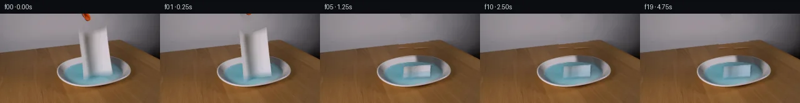

![首帧]()

Round 00
2026-11-05T14:34:28.610409+00:00像素候选变化代码 +369/−0inspection 更新
pixels 5e777ca339818873 · code 31cdb134ba035862
查看本轮 generate.py 真实 diff
--- previous/generate.py
+++ current/generate.py
@@ -0,0 +1,369 @@
+"""Source-pixel cloth continuation. No models, network, or external renderer."""
+from pathlib import Path
+import json
+import numpy as np
+from PIL import Image, ImageDraw
+from scipy.ndimage import map_coordinates, gaussian_filter, maximum_filter, minimum_filter
+from scipy.optimize import least_squares
+from scipy.spatial import cKDTree
+import artifact_io
+
+ROOT = Path(__file__).resolve().parent
+W, H, SS = 256, 144, 3
+SOURCE = np.asarray(Image.open(ROOT / 'first_frame.png').convert('RGB'), dtype=np.float64)
+YY, XX = np.mgrid[:H, :W]
+RNG = np.random.default_rng(127)
+
+
+def smoothstep(a, b, x):
+ p = np.clip((x-a)/(b-a), 0, 1)
+ return p*p*(3-2*p)
+
+
+def sample_rgb(im, x, y):
+ return np.stack([map_coordinates(im[..., c], [y, x], order=1, mode='nearest')
+ for c in range(3)], axis=-1)
+
+
+def source_coords(u, v):
+ # Source outline, including the dipped, curled upper edge and skewed bottom.
+ upper = np.interp(u, [0, .16, .35, .58, .78, 1], [25.5, 31.5, 32.3, 28.5, 25, 20.7])
+ lower = np.interp(u, [0, .15, .30, .55, .8, 1], [106, 106, 103, 100.5, 98.3, 97.5])
+ xl = 126 + 7.2*v + 1.1*v*v
+ xr = 170 + 7.0*v + 2.0*v*v
+ return xl + (xr-xl)*u, upper*(1-v) + lower*v
+
+
+def outline_mask():
+ steps = np.linspace(0, 1, 180)
+ uv = [(u, 0) for u in steps] + [(1, v) for v in steps] + \
+ [(u, 1) for u in steps[::-1]] + [(0, v) for v in steps[::-1]]
+ poly = [tuple(float(q)*SS for q in source_coords(u, v)) for u, v in uv]
+ im = Image.new('L', (W*SS, H*SS), 0)
+ ImageDraw.Draw(im).polygon(poly, fill=255)
+ return np.asarray(im.resize((W, H), Image.Resampling.LANCZOS), float)/255
+
+
+SOURCE_ALPHA = outline_mask()
+TOWEL_REPAIR = gaussian_filter(maximum_filter(SOURCE_ALPHA, size=5), .60)
+# The original lower blur/refraction belongs to the hanging towel, too.
+foot = np.exp(-((XX-155)/24)**6 - ((YY-103)/4.2)**6)
+TOWEL_REPAIR = np.maximum(TOWEL_REPAIR, .85*foot)
+TOWEL_REPAIR[TOWEL_REPAIR < .003] = 0
+
+
+def polynomial_features(x, y, degree=3):
+ return np.stack([x**i*y**j for i in range(degree+1)
+ for j in range(degree+1-i)], axis=-1)
+
+
+def fit_color(mask, degree=3, normalization=(150, 60, 65, 35)):
+ cx, cy, sx, sy = normalization
+ f = polynomial_features((XX-cx)/sx, (YY-cy)/sy, degree)
+ coef = np.linalg.lstsq(f[mask], SOURCE[mask], rcond=None)[0]
+ return f @ coef
+
+
+WALL_LINE = 62.2 - .105*XX
+wall_valid = (YY < WALL_LINE-3) & (XX > 80) & (XX < 221) & (YY > 12) & \
+ (TOWEL_REPAIR < .001)
+wall = fit_color(wall_valid, 3)
+wall_res = SOURCE[14:40, 90:122] - gaussian_filter(SOURCE[14:40, 90:122], (2, 2, 0))
+wall += .55*wall_res[(YY-14) % 26, (XX-90) % 32]
+
+# Recover the very small tool cutout by the color difference from the wall fit.
+near_tool = (XX >= 129) & (XX <= 147) & (YY <= 13)
+tool_core = near_tool & (np.linalg.norm(SOURCE-wall, axis=2) > 24)
+TOOL_ALPHA = gaussian_filter(maximum_filter(tool_core.astype(float), size=3), .4)
+TOOL_ALPHA *= near_tool
+TOOL_REPAIR = gaussian_filter(maximum_filter(TOOL_ALPHA, size=3), .4)
+
+# Fit the observed outer rim from exposed table/rim crossings.
+outer_points = np.array([(121,71),(114,73),(108,75),(103,77),(100,79),(97,81),
+ (95,83),(94,85),(92,89),(91,93),(92,97),(94,101),(98,105),(104,109),
+ (112,113),(119,115),(140,117),(158,115),(177,111),(190,107),(199,103),
+ (205,99),(208,95),(208,91),(208,87),(205,83),(201,79),(196,75)], float)
+
+def ellipse_fit(points, init):
… diff truncated; 282 more lines …